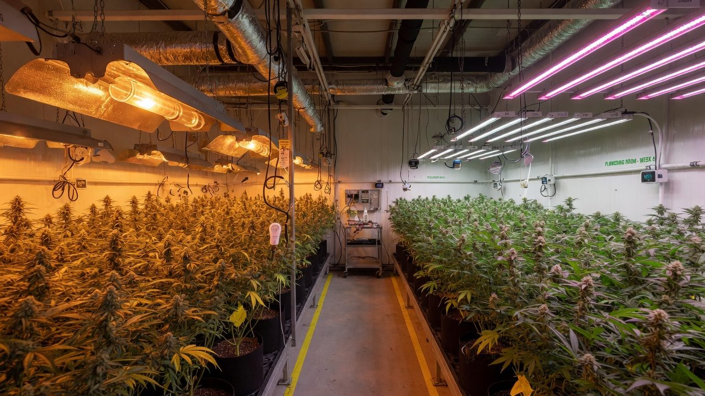
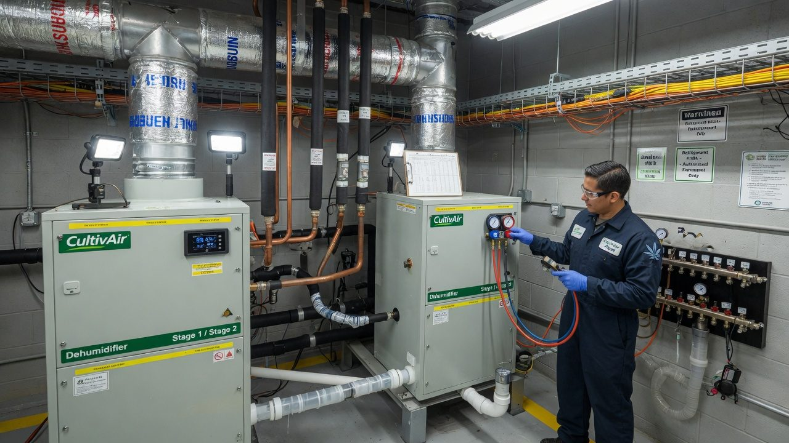
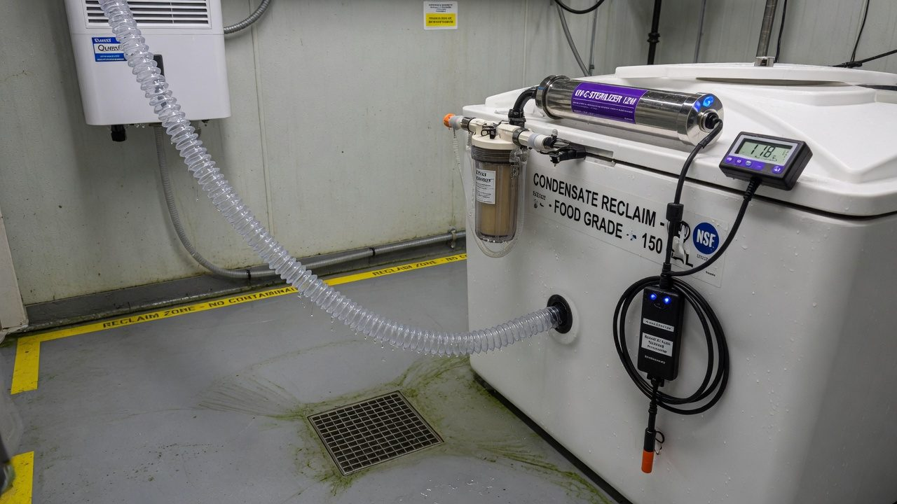
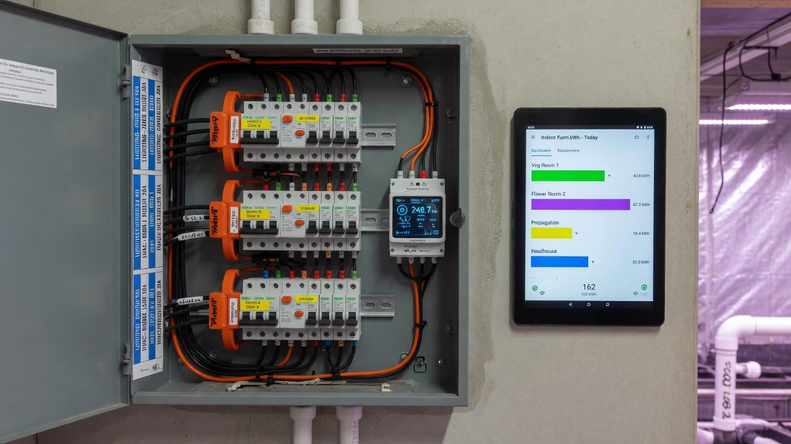

Energy, utilities and sustainability
Find the quantity of electricity that the lighting, the HVAC and the dehumidification use. Then do the steps of the retrofit sequence, with citations: efficacy, the double dividend, demand charges and water reuse. Thus you can find the changes with the shortest payback in your room and measure the result of each change.
Purpose and scope
Of all the products that persons make, indoor cannabis is one of the products that use the most energy. To make one kilogram of flower in a usual indoor room, the room uses many thousand kilowatt-hours. In the model of Mills, the quantity is approximately 6,000 kWh, which is approximately six kWh for each gram[1].
In 2012, the industry used approximately 1% of the electricity that the US used. The new estimate in 2025 gives the emissions of the industry as 44 million metric tons of CO₂e each year. This quantity is the same as the emissions of approximately 10 million cars. The energy bill of the industry in the US is approximately US$11 billion[3].
Almost all of this energy intensity is not necessary. Two rooms can make the same flower. A room with high efficiency and a room with low efficiency have a very large difference in energy. Indoor, greenhouse and outdoor production have a difference of two orders of magnitude[4].
Energy is usually one of the highest costs of operation for a cultivation facility. The estimates are from 20% to a maximum of 50% of the production cost[5]. You cannot decrease the cost of the building or the cost of personnel with engineering. But you can decrease the energy cost with engineering, and no other result becomes worse.
This paper gives information about the systems that use the kilowatt-hours and about the quantities that the benchmark investigations measured. It also gives the sequence of steps that decrease the bill.
This paper helps you in all the steps. The first step is to read your electricity bill, and the last step is a retrofit for efficiency with citations. It is not necessary to know engineering. The paper gives the definition of each term where the term first occurs. These papers give related information: lighting fundamentals (the effect of the photons), grow-room systems (the function of the equipment) and scaling to high light (the result when you increase the light intensity).
Definitions
The information about energy uses only a small number of units. Make sure that you know these units. Then you can read each specification, tariff and benchmark in this paper easily.
Before you compare numbers, change all the numbers to the same unit. Sources in the US give kWh for each square foot and kWh for each pound. Multiply the value for each square foot by 10.8 to get kWh/m². Multiply the value for each pound by 2.2 to get kWh/kg.
Evidence and limitations
We want each paper to be correct. Thus we examine each paper for information that is not solid. This information comes from the view of one grower, from a small number of sources, or from grower methods that have no controlled test. We identify this information, and we do not show it as solid.
Frequently there is no paper for the decision that you must make. Then we use the reports of other growers and the methods that work in the rooms that we know. This information can help you, but it is not the result of a laboratory test. Use the methods that work for your plants, for your room and for your meters. If a table does not agree with your crop, use the data from your crop and record the difference.
- The primary definitions and the units of measurement in the paper
- Safety limits that have a citation to a regulation or a specification
- Target ranges for light, climate and feed in each stage. They are start values that you can change.
- SOPs that work in many rooms, but you must adjust them for your genetics and meters
- A number for yield or potency that you will always get, with no test at many sites
- Controller setpoints from a different facility, with no new calibration
If you find an error, make a report. We will correct it. Make the report on GitHub, with the name of the paper and the information that is incorrect. If you have a source, include it: Make a report of an accuracy problem. The regulations, labels and licenses of your area always override each procedure in these papers. The label weak in a paper shows the points where the risk of an error is highest.
Facts about energy cost
1. Lighting is the largest system, and the climate systems are the largest group. In the end-use model of Mills, lighting uses approximately one third of the total energy. Ventilation, dehumidification and air conditioning together use almost half[1]. A utility in the Pacific Northwest did an investigation with licensed growers. The investigation found that lighting is approximately three quarters of the electrical load of indoor rooms in that moderate climate[4].
For greenhouse-gas emissions, the 2021 life-cycle investigation found that HVAC is the largest part in each US location of the model. Lighting is the second largest part in all the locations[2]. Thus lighting and climate together are 80–90% of the total, and all the other systems are small.
2. Each watt of lighting power has two costs. Almost all the input power of a fixture changes to heat in the room. The cooling system then removes the heat, and it uses approximately one more watt for each three watts of heat. When you decrease the lighting power, the cooling cost also decreases. This effect is the double dividend (Section 7).
3. The bill has a charge for kW and a charge for kWh. Commercial tariffs frequently have a charge for your peak demand (kW) and also a charge for your energy (kWh)[11]. When the lights in three flowering rooms start at the same second, they can cause a peak. You have the cost of this peak for all the month, and the yield does not increase.
4. You cannot control a quantity that you do not measure. Facilities that compare their data with benchmarks (kWh for each square meter of canopy, grams for each kWh) are the facilities that become better. The estimate from the benchmark data is that most growers can decrease their energy cost by a minimum of 30% with methods that are available[10].
Photons are the product. All the other kilowatt-hours remove the heat and the moisture that the photons cause. First, get the photons with a higher efficacy. Then move the heat and the moisture with a higher efficiency. Measure all the systems. Thus you have data that show the result.
Measured energy consumption by system
The first end-use model of a standard module for indoor production is from Mills (2012), with the method shown. This model continues to be the reference for the fractions of the energy. Lighting uses approximately 33% of the energy, ventilation and dehumidification use 27%, and air conditioning uses 19%. CO₂ enrichment, the movement of water, heating of the rooms and drying use the remaining energy[1][6].
The power density in a flowering room is approximately 2,150 W/m² (200 W/ft²). A data center has a power density of the same order of magnitude[5].
The values for facilities in operation are different from the values of the model. The Northwest Power and Conservation Council collected data from licensed growers in Oregon and Washington. The Council measured the indoor operations at approximately 1,380 kWh/m²·yr (128 kWh/ft²·yr) of canopy. Of this quantity, approximately 1,075 kWh/m² (100 kWh/ft²) was for lighting and 300 kWh/m² (28 kWh/ft²) was for HVAC and pumps. For greenhouses, the quantity was 130 kWh/m² (12 kWh/ft²), and for outdoor production it was approximately 11 kWh/m² (1 kWh/ft²)[4].
Rooms in moderate climates use a larger fraction of their energy for lighting. In climates that are hot, that have high humidity or that are very cold, the HVAC fraction increases.
The model of the 2021 life-cycle investigation has one facility in each US county. In all the facilities, the climate systems caused the largest part of the greenhouse-gas emissions. Part of the cause is the ventilation rate. The grow rooms in the investigation had 12 to 60 air changes for each hour (ACH). A house has 0.35 ACH, and a hospital operating room has a minimum of 15 ACH[2].
The 33/27/19 fractions of Mills are for a room with HPS lamps. When you replace the HPS lamps with LED fixtures, the lighting energy (kWh) decreases by approximately 40%. The plants continue to transpire. Thus the fraction of the bill that the dehumidifier causes increases, but the total decreases. After a retrofit, the climate systems are usually the largest group of loads. The HVAC work (Section 8) is the second part of the same retrofit, and not a different retrofit.
Energy-intensity benchmarks
This section shows the quantity of electricity that a gram of flower uses. The investigations give different values. The differences give information. The range of the values shows the part of the number that is from physics and the part that is from decisions.
| Source | Data measured | Primary value |
|---|---|---|
| Paper of Mills 2012 (Energy Policy)[1] | A model of a standard indoor module. The model uses the average procedures in the US. | Approximately 6,074 kWh/kg. Approximately 13,000 kWh each year for one module of 1.2 m × 1.2 m × 2.4 m (4'×4'×8'). |
| Paper of Summers and other authors 2021 (Nature Sustainability)[2] | A model with a facility in each US county. The boundary is cradle-to-gate. | Electricity: approximately 1,700–5,300 kWh/kg, with different values for different locations. Greenhouse gas (GHG): 2,283–5,184 kg CO₂e/kg. |
| ACEEE industry report 2017[5] | Data from the industry and from utility programs | Approximately 4,400 kWh/kg (approximately 2,000 kWh/lb). The power density is approximately 2,150 W/m² (200 W/ft²). |
| NW Power and Conservation Council[4] | An investigation of licensed growers in OR and WA | Indoor: approximately 1,380 kWh/m²·yr. Greenhouse: approximately 130 kWh/m²·yr. Outdoor: approximately 11 kWh/m²·yr. In kWh/ft²·yr, the values are 128, 12 and 1. |
| Cannabis PowerScore (RII)[10] | Benchmark data of facilities. The facilities supply the data. | The system records kWh/m² (kWh/ft²) and g/kWh. Most facilities can decrease their energy cost by a minimum of 30%. |
The next numbers are an example of the units. 4,400 kWh/kg is 4.4 kWh for each gram. For each gram of flower, this quantity of electricity is approximately the electricity that a typical refrigerator uses in three days.
The metric that the benchmark system uses is g/kWh. In this metric, the same number is approximately 0.23 g/kWh. The best value of the 2021 model (approximately 1,700 kWh/kg) is approximately 0.6 g/kWh. LED rooms with good operation give their results in these units[10].
Do not compare your measured kWh/g with a value from an investigation that has a different boundary. If you do this, the result has no value.
The investigations have different boundaries. Some investigations count only electricity. The 2021 model also counts natural gas, upstream materials and CO₂ supply. A figure for each unit of canopy does not include the vegetative rooms, the drying area and the offices. But some investigations include them.
Select one metric that you can measure with the same procedure each time. The best metric is the total facility kWh for each gram of dry flower product in each cycle. Compare each cycle with the previous cycles of your facility.

Lighting efficacy
A grow light makes photons. The efficacy is the quantity of photosynthetic photons that the light makes for each joule of electricity, in µmol/J. At a given light intensity, the efficacy controls the lighting bill. A 1,000 W double-ended HPS lamp supplies approximately 1.72 µmol/J[7].
In 2020, the best LED fixtures that were available had an efficacy of 2.5–2.8 µmol/J with a white+red spectrum. With a blue+red spectrum, the efficacy was 3.0 µmol/J. The practical limit is approximately 3.4 µmol/J for white+red and 4.1 µmol/J for blue+red[7].
The DesignLights Consortium (DLC) has a Qualified Products List (QPL) for horticulture. The minimum efficacy for the QPL is 2.5 µmol/J from April 2025. Rebate programs use the QPL as a reference. The DLC gives the information that this minimum is more than 45% higher than the efficacy of the best alternative that is not an LED[8].
Calculate the result one time by hand. If the lights supply the same photon flux at 3.0 µmol/J and not at 1.72 µmol/J, the lighting power decreases by approximately 43% (1 − 1.72/3.0).
The data from facilities show the same result. A benchmark investigation of 84 indoor facilities compared facilities with LED lights in flowering and facilities with double-ended HPS lamps. On average, the LED facilities had 34% better facility energy efficiency and 80% better production efficiency (grams for each unit of energy)[9]. In a retrofit from HPS to LED in Oregon, with documentation, the grams for each kWh increased by 68%[10].
First, the differences in efficacy of LED products are larger than the information of the manufacturers shows. Read the µmol/J that the test gives on the QPL. Do not read the µmol/J from the manufacturers[8].
Second, a change to LED lights changes the physics of the room. An LED fixture gives less radiant heat, thus the temperature of the leaf surface is lower at the same air temperature. As a result, the target air temperature usually increases by one or two degrees, and it is not as easy to control the humidity. The lighting paper gives information about the effect on the plant. Section 8 gives information about the effect on the equipment.
- Compare fixtures with µmol/J and total µmol/s output. Do not compare fixtures with watts. Watts are the cost, and not the product.
- Make sure that the fixture is on the QPL of the DLC for horticulture. The QPL has the number from the test. To get a rebate, it is frequently necessary that the fixture is on the QPL[8].
- When an LED operates at a lower light output, it usually has more efficacy, by a small quantity. Thus the cost is small when you select fixtures with headroom and operate them at 80–90% of the full power.
- Higher efficacy gives you one of two results: the same light with less power, or more light with the same power. Select the result that is necessary for your room before you get the fixtures (refer to scaling to high light).
Lighting heat and HVAC load
The physics of the heat makes the efficiency of the lighting the primary lever. Almost all the power that goes into a fixture changes to heat in the room. The leaves and the surfaces absorb the photons, and the photons also change to heat. While the lights are on, the cooling system must remove this heat. A cooling system that has a compressor uses approximately one watt of compressor power for each three watts of heat that it moves. The ACEEE industry report used 1.2 kW/ton (a COP of approximately 2.9) with cooling during all the year when the lights are on[5].
Calculate the numbers for one year. The double dividend gives most of the payback. The ACEEE example is a fixture in flowering that changes from 1,000 W high-intensity discharge (HID) to 600 W LED. This change decreases the energy by approximately 2,300 kWh each year, when you include the lower cooling load (12-hour days).
A fixture in vegetative growth that changes from 600 W to 300 W decreases the energy by approximately 2,600 kWh each year (18-hour days). The simple payback periods are 2 to 4 years at US$0.12/kWh, before a rebate[5]. When the electricity price is higher, the payback period decreases in the same ratio.
- Heating in winter can decrease the dividend. In cold climates, the waste heat from HPS lamps supplied heat to the room, and this heat had no cost. After you change to LED, it is possible that you must supply some of this heat again. A heat pump with a COP of 3 is better than resistance coils with a COP of 1.
- The latent heat load does not decrease. The environment and the canopy cause the transpiration, and not the power of the fixtures. The dehumidifier continues to operate. The AC operates for less time, thus it removes less moisture on its coil as a secondary effect. As a result, the dehumidifier frequently operates more after a retrofit. Include this load when you calculate the cost (Section 8).

HVAC and dehumidification efficiency
After lighting, the remaining kilowatt-hours are in the climate systems[1][2]. These systems must remove the heat of the room and the water that the plants transpire. But the same work can have very different efficiencies. Four methods follow. They are approximately in the sequence of the quantity of energy that each method decreases, from the largest to the smallest.
1. Select equipment with a high COP, and divide the capacity into stages. Equipment with a higher COP does the same task with less power, but only if it operates at a load that gives its best efficiency. One unit that is too large starts and stops frequently when the load is not full. It does not operate for a sufficient time to dehumidify correctly. It causes damage to the compressor with many starts, and it uses more energy at each start.
Some smaller units in stages, or compressors that change their capacity, give a capacity that agrees with the load of the room. In a grow room, the load changes very much between the time when the lights are on and the time when the lights are off. Select the capacity for the heat load of the LED room, and not for the heat load with HPS lamps.
2. Use again the heat that has a cost. Dehumidification with sub-cooling makes cold air. The system must then increase the temperature of the air again to the supply temperature. If you use electric resistance for this task, the COP is 1, and you have the cost of the energy two times.
Hot-gas reheat uses the heat that the refrigeration circuit releases, at no cost. Air-to-air heat-recovery dehumidifiers decrease the temperature of the air that goes into the unit with the cold air from the unit. In a test at UC Davis, such a system used 30–50% less energy than usual units without heat recovery[5]. Desiccant systems can also use waste heat to dry the desiccant again, where waste heat is available[5].
3. Use free cooling where the climate gives it. When the outdoor air has a lower temperature than the air in the room and is drier, an economizer can release the heat. It uses the energy of a fan and not the energy of a compressor. The ventilation rates in the investigation of the industry are from 12 to 60 air changes for each hour[2].
Sealed rooms with CO₂ enrichment correctly operate at the low end of this range. But free cooling is possible in the hours when the lights are off, and in the seasons between summer and winter. The controls and the filtration must be correct for it. The problems of free cooling (CO₂ that goes away from the room, humidity that goes into the room, filtration and biosecurity) are in airflow design and CO₂ enrichment.
4. Examine the efficiency of the dehumidifier. The rating of a dehumidifier is the quantity of water that it removes for each kWh, in liters. Integrated dehumidifiers and heat-recovery dehumidifiers have much better ratings than a group of portable dehumidifiers for houses. Examine the drying rooms with the same procedure as the flowering rooms.
The room continues to transpire for some hours after the lights are off. Thus the dehumidifier capacity when the lights are off controls the mold risk, and it is also an energy cost (refer to mold risk).
Each controller has a deadband. The deadband is the difference between the setpoint to start cooling and the setpoint to start heating. If the room control keeps the temperature at the setpoint ±0.3 °C (±0.5 °F), the equipment starts and stops frequently. This operation uses energy that does not help the plants.
Increase the width of the deadband to the largest value that does not cause an effect on the plants. A deadband of ±1 °C / ±1.8 °F is wide. Make sure that the setpoints for heating and for cooling do not have an overlap. Make sure that the AC and the dehumidifier do not cause opposite effects. Two controllers that cause opposite effects, for example with reheat, are a frequent cause of waste of kWh that is not easy to see.
Demand charges, energy consumption and photoperiod
Your bill has two different items. Energy (kWh) is the total quantity that you used. Demand (kW) is the highest average rate at which you used energy, typically in a period of 15 minutes or 30 minutes in the month.
Commercial tariffs frequently give a price for demand that is different from the price for energy. In an investigation in the US, nearly five million commercial customers had tariffs with demand charges of more than US$15/kW-month[11]. At this price, a peak of 190 kW has a cost of approximately US$2,850 each month. This cost is different from the cost of the kWh.
This retrofit has the lowest cost in the paper, because it is only a change to the start times of the lights. Flowering rooms always operate with a 12/12 photoperiod. Thus the start of the lights at different times does not decrease the photons. It also decreases the peaks of the load on your transformer, wiring and HVAC equipment. The climate systems have the step change of one room at a time and not of three rooms.
Your vegetative room can have an 18/6 photoperiod. Put its 6 hours of darkness in the period when the lights of all the flowering rooms are on.
General information about tariffs. With a flat tariff, only efficiency and the control of demand decrease the cost. With a time-of-use tariff, the price of a kWh at peak hours can be much higher than the price at off-peak hours. A 12/12 room can put all of its lights-on period in the hours with the low price, typically at night.
When the lights are on during the night, the largest cooling load occurs when the outdoor air has its lowest temperature. Thus each unit that releases heat to the outdoor air has a higher COP. The problems are for personnel. Rooms that operate at night must have checks at night, and you do not find problems with light leaks as easily. Read the tariff of your utility (fixed charge, energy price for each period, demand charge, conditions for power factor) before you make a change.
| Item on the bill | Cause | Your lever |
|---|---|---|
| Fixed charge (each day) | The size of your connection to the electrical supply | Make the supply size correct for your load. Do not have capacity headroom that you do not use, because it has a cost. |
| Energy (kWh) | All the systems in Sections 4–8 | Efficacy, COP, heat recovery, controls |
| Demand (kW) | The worst period of 15–30 minutes in the month | Start the lights in the rooms at different times. Use a soft starter on each large motor. Do not let the peaks of all the rooms, the dehumidifiers and the irrigation occur at the same time. |
| Time-of-use price difference | The time when you use energy, and not the quantity | Put the lights-on periods in the periods with a low price. Decrease the room temperature before the peak periods. |
| Power factor (if it is on the bill) | Reactive load from magnetic ballasts and from motors | LED drivers have a power factor near one. Use correction capacitors for large motors. |
Before you change the facility to operation at night, calculate the effect with your tariff. Use a spreadsheet and the interval data of one month. The demand charges and the time-of-use tariffs are very different for each utility and for each country. Some utilities measure demand only at peak times, and some measure demand during all the day. Some utilities use your worst month for the other months of the year. The method above is the same for all tariffs, but the numbers are not the same.

Energy consumption of the water system
Indoor cannabis uses much water, and you can get a large part of this water again. The reports show an irrigation quantity of approximately 9–11 L/plant/day (2.4–2.9 gal/plant/day) for mature plants in indoor rooms in the peak season. For outdoor plants at the height of summer, the quantity is approximately 22.7 L/day (6.0 gal/day)[6]. But the values for each plant change very much with the size of the pot, the size of the plant and the stage. Thus the benchmark systems measure the water for each unit of canopy and not for each plant[10]. In drain-to-waste systems, the grower also applies 10–30% more water as runoff, to control the salts (for more information, refer to the irrigation papers).
A new grower frequently does not know that, in a sealed room, almost all the irrigation water goes into the air. The plant transpires almost all the water that it absorbs. The dehumidifier and the AC coils then condense this vapor to liquid water.
A large dehumidifier in a flowering room can make approximately 270 L/day (71 gal/day) of condensate that is almost distilled water. This quantity is approximately 1,900 L/week (502 gal/week)[13]. You moved this water with pumps and applied treatment to it. Then you removed it from the air with electricity that has a cost. If you send the condensate to the drain, you do not use this water again.
These instructions are for the water loop. Apply treatment to the condensate before reuse. The usual treatment is a carbon filter and a sediment filter, then UV. Then mix the condensate with other water, or add minerals to it. Water with an EC near zero causes damage to pipes, and it is not a source of calcium[13].
Collect the runoff and do not mix it with other water. It contains nutrients and microbes from the root zone. Thus you must apply correct treatment to the runoff, or remove it correctly. Keep the tanks cool and in darkness, and make the water in the tanks flow, to prevent biofilm.
Read the local regulations first. The regulations are different in different areas. There are regulations for reclaimed condensate on a crop for consumption, for backflow, and for trade waste from runoff. Source water, RO and alkalinity gives information about water quality (the contents of the water before the nutrients).
Record the volume of condensate each day. The volume changes with the transpiration of the room. Thus, if the volume decreases suddenly, the cause can be plants that do not transpire, a dehumidifier that does not operate, or an irrigation fault. Frequently, this occurs one day before the plants show a problem. Facilities with sensors for the condensate volume use the liters of condensate as a biosignal of the crop, and not only as reclaimed water.
Carbon intensity and greenhouse emissions
The carbon emissions are the kWh that you use multiplied by the emissions of the grid for each kWh. The 2021 investigation of the US found cradle-to-gate emissions of indoor production of 2,283–5,184 kg CO₂e for each kg of dried flower (median 3,658). The values change with the location. The emissions of the US grids are in the range of approximately 245–766 g CO₂e/kWh[2].
The previous primary estimate of Mills was 4,600 kg CO₂e/kg. This value is approximately 1.5 kg of CO₂ for each cannabis cigarette[1]. The estimate in 2025 for the industry is 44 million metric tons of CO₂e each year. This quantity is approximately 1% of the total emissions of the US. Approximately 90% of this quantity is from indoor production[3].
For indoor growers with a license, regulations for security and quality usually give the production method. Thus the correct procedure for carbon has two steps. First, decrease the kWh (all the methods above). Then get electricity with lower emissions.
The sources of the electricity in the grid are very important. Two rooms can have the same efficiency. The room in a location with mostly hydro electricity has much lower emissions than the room in a location with mostly coal electricity[2].
New Zealand has a grid with mostly renewable electricity: 85.5% in 2024[14]. On a grid of this type, the carbon emissions for each kWh are much lower. But the bill does not change. Each method for efficiency in this paper has a payback in dollars, and the payback is the same on all grids.
- Give numbers that you measured. Give the units and the boundary. 'We decreased the kWh/g of the facility by 22% from one year to the next' is better than 'we are good for the environment'.
- Give the source and the year of each emissions value for the grid, because grids change each year[14].
- When you subtract carbon offsets from an intensity value, you must tell this to the persons who read the value.
- If you supply markets that have sustainability reports, customers want two numbers more and more frequently: energy intensity and water intensity for each gram[10].
Energy retrofit sequence
A retrofit for efficiency has an unsatisfactory result because of an incorrect sequence, and not because of the equipment. The sequence below is necessary because each step changes the size of the equipment for the next step. If you do the steps in the opposite sequence, you must get the equipment two times. The sequence also puts the steps with a low cost first. Thus the lower energy cost from the first steps helps to supply the capital for the subsequent steps.
- 1Measure first: a minimum of two weeks of baselinePut a submeter on each of these systems: the lighting, the HVAC, the dehumidification and 'all the other systems' (Section 13). Record the conditions in the room at the same time. The measurements give you the data from before the retrofit, and the load numbers for the size of the equipment. The data from before the retrofit show the quantity of energy that each subsequent step decreases. Compare your kWh/ft² and your g/kWh with the benchmark data of the industry. The result shows the quantity of energy cost that you can decrease[10].
- 2LED retrofit: the primary stepThe LED retrofit is the largest lever. It decreases the lighting energy (kWh) by approximately 40% for the same photons. The cooling dividend decreases the energy more (Sections 6–7). The payback periods with documentation are 2 to 4 years before rebates[5]. In facilities in operation, the LED facilities are 34–80% better in efficiency than the HPS facilities[9]. Increase the light intensity in stages, because a retrofit that causes bleaching of the crop has no payback (refer to the acclimation paper).
- 3Controls and deadbands: almost no capital costStart the lights in the rooms at different times (Section 9), and use stages for the equipment. Increase the deadbands and correct the setpoints that cause opposite effects. For the lights-off period, set the targets to the values that the mold risk makes necessary. Do not use the appearance of the flowers to set the targets. This step usually decreases the bill by 5–15%, and the only cost is the time for commissioning. An automation system helps in this step.
- 4Replace the dehumidification and HVAC equipment, with the correct sizeSelect the correct capacity for the climate systems. Use the heat load with LED lights and the start times of the rooms. Use stages, or compressors that change their capacity. Use hot-gas reheat and not resistance reheat. Use heat-recovery dehumidification (30–50% less energy in a test[5]). The change to LED made this step necessary, because the fraction of the latent heat load increased (Section 7).
- 5Envelope: seal and insulate in the last stepSeal the penetrations to prevent the movement of vapor. Put insulation in the envelope for the climate that causes the highest load. Make sure that personnel close the doors, and put strip curtains in the doors that personnel use frequently. This step is last because it has the slowest payback for each dollar in most retrofits. But an envelope with leaks decreases the result of the other four steps. In climates with high humidity, infiltration is a permanent load of latent heat on the new dehumidifier.
Always do the LED retrofit before the HVAC retrofit. New LED lights decrease the sensible heat load by 30–40%. If you get HVAC first, the HVAC is too large. A unit that is too large starts and stops frequently, and it does not dehumidify correctly for all its life. The only different condition is a unit that is defective and that you must replace at this time. In this condition also, select the capacity for the room as it will be after the change to LED.

Energy metering
The utility meter gives you one number each month for a building with many different pieces of equipment. You can use all the information in this paper when you divide this number into parts. Use current transformer (CT) submeters on the lighting circuits, the HVAC equipment and the dehumidifiers. Use CT submeters also on the circuits for pumps and controls. A submeter has a low cost for each circuit, and it connects to an automation system or to a system that monitors the data. From there, three procedures do the work:
The meter also gives the correct numbers for sustainability (Section 11). The trend of the measured kWh/g from one cycle to the next is the audit trail. Facilities that supplied benchmark data found, on average, that they can decrease their energy cost by a minimum of 30% with methods that are available[10]. But the data of a meter, and not an estimate, showed each method to decrease the energy cost.
Frequent problems in energy retrofits
These problems occur frequently. You can prevent each problem before you start the retrofit, but each problem has a high cost after the retrofit.
The lighting energy (kWh) decreased by 40%. The RH increased, and the risk of mold increased. The sensible heat load is lower, thus the AC operates for less time. As a result, the AC coil removes less moisture as a secondary effect, and the transpiration did not change much. The dedicated dehumidifier was almost at its limit before the change, and at this time it is the limit of the system. Procedure: calculate the latent heat load again as part of the LED retrofit, and not after the first problem.
A cooling system with a capacity for HPS lamps (or a large capacity 'to be safe') starts and stops frequently after the change to LED. The temperature stays at the setpoint, but the humidity changes. The compressors have a short life, and the efficiency decreases because of the starts and stops. Procedure: use some smaller units in stages, or compressors that change their capacity. Select the capacity from the load that you measured after the retrofit. Do not use the sum of the nameplate values of the equipment before the retrofit.
A retrofit for efficiency decreased the energy by 20%, but the bill did not change much. All the rooms continue to start at the same time, and the demand charge keeps the total high. Procedure: read the tariff and start the lights in the rooms at different times. Then make sure that the interval data show that the peak decreases (Section 9).
A room with vents removes moisture at no cost. If you close the vents for CO₂ enrichment, the system must condense each liter of transpired water, and this has an electrical cost. Without a heat-recovery dehumidifier, the cost of the dehumidifier increases more than the cost that you decrease when you seal the room. Procedure: calculate the cost of the energy balance of the sealed room before you seal the room. Collect the condensate to get some of the value again (Section 10).
The roots get water at no cost. The water also contains dissolved metals from the coils and microbes from the biofilm in the drain pan. Root disease and an unsatisfactory result in the tests for heavy metals show this problem. Procedure: filter the condensate, sterilize it and add minerals to it. Make sure with a test in a laboratory that the water is correct. Make sure that the regulations let you use the condensate again with the type of your license[13].
You compare a good kWh/g value with a value from an investigation that has a different boundary. For example, one value is for electricity only and the other value is for the life cycle. Or one value is for the canopy only and the other value is for the facility. A person who examines the values will not accept them. Procedure: select one boundary for your facility and give the boundary with the number. Compare the number first with the previous cycles of your facility (Section 5).
Troubleshooting
The meter shows energy faults before the crop shows them. Use this table with your interval data.
| Symptom | Possible cause | Check |
|---|---|---|
| The bill increases, and the yield does not change | The equipment is in an unsatisfactory condition. The coils are dirty, a dehumidifier has a fault, or the drift of the sensors causes too much operation of the HVAC. | Compare the trend of each end-use submeter with the last cycle. Examine the condition of the coils. Calibrate the room sensors. |
| The demand charge increased very much in one month | Loads occur at the same time. The cause can be a new load. The cause can also be a change in start times that makes the rooms start at the same time. A large motor that starts in the peak period can also be the cause. | Use the 15-minute interval data for the day with the peak. Examine the start times of the irrigation, dehumidifiers and lights. |
| The RH increases slowly after an LED retrofit | The latent heat load is the same, but the AC operates for less time, and it removes less moisture as a secondary effect. | Compare the duty cycle and the liters of water removed each day with the values before the retrofit. Add dehumidifier capacity in stages. |
| The dehumidifier operates at full capacity, but the room continues to have high humidity | The dehumidifier is too small after you seal the room or after the canopy becomes larger. Or the AC starts and stops frequently and its reheat causes an effect that is opposite to the effect of the dehumidifier. | Compare the liters of condensate each day with the liters of irrigation water each day. Make sure that the setpoints of the AC and the dehumidifier do not cause opposite effects. |
| The lighting kWh is 10% or more less than the usual value | Drivers that do not operate, or bars that have a fault. The kWh is lower because the fixtures make less light. | Compare the power of each circuit with the baseline from commissioning. Make a PPFD map below the fixtures that can have a fault. |
| A power factor charge on the bill | Magnetic ballasts in an unsatisfactory condition, or large motors without correction | Examine the power factor (PF) on the bill. Examine the interval data from the utility. Use correction capacitors, or replace the drivers with new drivers. |
| The condensate volume decreases suddenly | The transpiration stops (an irrigation fault or a crop in an unsatisfactory condition), or the dehumidifier has a fault. You must correct the two causes immediately. | Compare the irrigation records with the substrate sensor data. Compare the current of the dehumidifier with its baseline. |
Energy control model
In one sentence: an indoor grow room changes electricity to photons. Then it uses more electricity to remove the heat and the humidity that the photons caused. Each kilowatt-hour on your bill is for the photons or for the removal of the heat and the humidity. Thus efficacy multiplies its effect (Section 6), the double dividend occurs (Section 7), and the retrofit sequence puts lighting before HVAC (Section 12).
- Measure before you start a retrofit. The baseline measurement has the lowest cost of all the instruments. It is the only data that show that the retrofit had the correct result[10].
- Select photons for each joule, and not watts. Efficacy is the one specification that has an effect two times: at the driver and at the compressor[7][5].
- Move heat with a high COP, and not with resistance. Use a heat pump or hot gas for reheat and for winter heating. Use resistance heating only if no other method is possible, and put a meter on it.
- Schedule the loads to decrease the peak. If you start the lights at different times, you decrease the demand charge by 20–30% at no cost[11].
- Close the water loop. Condensate is water that has a cost, and it is a signal of the crop at no cost. Apply treatment to it and use it again[13].
- Give the trend of your facility, and not the benchmark of a different facility. Use kWh for each gram, with the same boundary, in each cycle[2].
Use targets that are possible. A room without windows cannot have the same numbers as a greenhouse. Sunlight gives energy at no cost, and a building cannot do the same[4][12].
But there is a large difference between a room without control and a room with measurement, LED lights, stages and heat recovery. In the first room, energy is the highest cost. In the second room, energy is a controlled input of the operation. The investigations show that you can decrease the bill by 30% or more with methods that are available and that tests show to be correct[10][5]. Start with the meter.
References
- Mills E (2012). The carbon footprint of indoor Cannabis production. Energy Policy 46:58-67. (End-use split lighting 33% / ventilation+dehumidification 27% / AC 19%; ~6,074 kWh and 4,600 kg CO2e per kg; ~13,000 kWh/yr per 4'x4'x8' module; ~1% of US electricity, ~US$6B/yr.) https://doi.org/10.1016/j.enpol.2012.03.023
- Summers HM, Sproul E, Quinn JC (2021). The greenhouse gas emissions of indoor cannabis production in the United States. Nature Sustainability 4:644-650. (Cradle-to-gate 2,283-5,184 kg CO2e/kg by location, median 3,658; HVAC the largest contributor everywhere, lights second; surveyed ventilation 12-60 ACH; modelled electricity ~1,700-5,300 kWh/kg; US grid intensity ~245-766 g CO2e/kWh.) https://doi.org/10.1038/s41893-021-00691-w
- Mills E (2025). Energy-intensive indoor cultivation drives the cannabis industry's expanding carbon footprint. One Earth 8(2). (Industry-wide ~44 Mt CO2e/yr, ~1% of total US emissions, ~90% from indoor production; ~US$11B annual energy bill; air-change rates ~60x homes.) https://www.cell.com/one-earth/fulltext/S2590-3322(25)00005-3
- Northwest Power and Conservation Council (2018). Electricity consumption from Northwest cannabis production (survey of licensed Oregon and Washington producers, 2017 canopy data). (Annual intensity: indoor ~128, mixed 38, greenhouse 12, outdoor ~1 kWh per ft2 of canopy; lighting ~100 of the indoor 128; OR+WA total ~112 aMW.) (source not from a journal, for example from a manufacturer) https://www.nwcouncil.org/sites/default/files/cannabisReport.pdf
- Remillard J, Collins N (2017). Trends and observations of energy use in the cannabis industry. ACEEE Summer Study on Energy Efficiency in Industry. (~200 W/ft2 power density; ~2,000 kWh/lb; LED retrofit examples 1,000→600 W flower and 600→300 W veg with ~2,300-2,600 kWh/yr saved incl. cooling at COP ~2.9 and 2-4 yr paybacks; heat-recovery dehumidification 30-50% savings in UC Davis WCEC testing; energy 20-50% of production cost.) https://www.aceee.org/files/proceedings/2017/data/polopoly_fs/1.3687880.1501159058!/fileserver/file/790266/filename/0036_0053_000046.pdf
- Zheng Z, Fiddes K, Yang L (2021). A narrative review on environmental impacts of cannabis cultivation. Journal of Cannabis Research 3:35. (Compiles Mills/NPCC end-use splits; water use ~22.7 L/plant/day outdoor in season and ~2.5-2.8 gal/plant/day indoor at peak.) https://doi.org/10.1186/s42238-021-00090-0
- Kusuma P, Pattison PM, Bugbee B (2020). From physics to fixtures to food: current and potential LED efficacy. Horticulture Research 7:56. (1,000 W DE HPS 1.72 umol/J; 2020 LED fixtures 2.5-2.8 white+red and 3.0 blue+red; practical limits 3.4 and 4.1 umol/J.) https://doi.org/10.1038/s41438-020-0283-7
- DesignLights Consortium (2025). Horticultural technical requirements V4.0 and qualified products list. (Minimum photosynthetic photon efficacy 2.5 umol/J from April 2025 - >45% above 1,000 W DE HPS; V3.0 floor was 2.30 from March 2023, itself 21% above V2.1's 1.90.) (source not from a journal, for example from a manufacturer) https://designlights.org/our-work/horticultural-lighting/technical-requirements/hort-v4-0/
- Resource Innovation Institute (2022). Study of cannabis energy use: indoor cultivation operations using LED lighting demonstrate better efficiency (84-facility PowerScore analysis: LED-flowering facilities averaged 34% better facility efficiency and 80% better production efficiency than DE HPS facilities). (source not from a journal, for example from a manufacturer) https://resourceinnovation.org/press-release/study-of-cannabis-energy-use-shows-indoor-cultivation-operations-using-led-lighting-demonstrate-better-efficiency/
- Resource Innovation Institute. Cannabis PowerScore benchmarking platform (facility efficiency kWh/ft2 of flowering canopy and production efficiency g/kWh; documented Oregon HPS→LED retrofit +68% g/kWh; most facilities estimated able to save >=30% of energy spend). (source not from a journal, for example from a manufacturer) https://resourceinnovation.org/blog/welcome-to-the-cannabis-powerscore-an-energy-benchmarking-tool-for-growers-of-all-types/
- McLaren J, Gagnon P, Anderson K, et al. (2017). Identifying potential markets for behind-the-meter battery energy storage: a survey of U.S. demand charges. NREL / Clean Energy Group. (~5 million of 18M US commercial customers can face demand charges above US$15/kW-month.) (source not from a journal, for example from a manufacturer) https://www.nrel.gov/news/press/2017/where-commercial-customers-benefit-from-battery-energy-storage.html
- New Frontier Data, Resource Innovation Institute, Scale Microgrid Solutions (2018). The 2018 Cannabis Energy Report. (US legal cultivation ~1.1 TWh/yr with +162% forecast by 2022; electricity-related emissions ~22.7 kg CO2e/kg outdoor and ~326.6 kg CO2e/kg greenhouse.) (source not from a journal, for example from a manufacturer) https://catalog.resourceinnovation.org/item/the-2018-cannabis-energy-report-407554
- Cannabis Business Times / Desert Aire. A guide to recovering condensate water in cannabis cultivation facilities. (Large flower-room dehumidification can yield ~500 gal (~1,900 L) per week of near-distilled condensate; filter, sterilise and re-mineralise before reuse; watch coil metals and drain-pan biofilm.) (source not from a journal, for example from a manufacturer) https://www.cannabisbusinesstimes.com/irrigation/news/15687039/a-guide-to-recovering-condensate-water-in-cannabis-cultivation-facilities
- NZ Ministry of Business, Innovation & Employment. Energy in New Zealand (renewable share of electricity generation 85.5% in 2024; 88.1% in 2023). (source not from a journal, for example from a manufacturer) https://www.mbie.govt.nz/building-and-energy/energy-and-natural-resources/energy-statistics-and-modelling/energy-publications-and-technical-papers/energy-in-new-zealand
Each citation in the paper, for example [1], refers to an item in this list. Each item is a primary source or an instruction from an authority, unless the item shows a different type. The results of cannabis tissue culture change much with the genotype. Before you use the dilutions, hormone doses and local regulations, make sure that they agree with the primary sources.